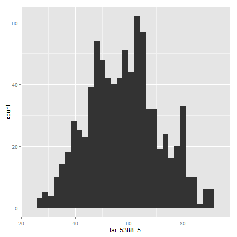
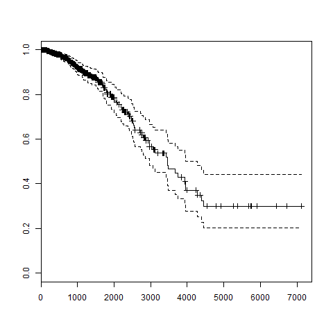

Analysing data with FsLab Journal
Example of using various type providers to analyse clinical and genomic datasets.
Looking at clinical data
We extract clinical data from Table 1 of Supplementary material, Comprehensive molecular portraits of human breast tumours. We can look some simple statistics about the data.
1: 2: |
type ClinicalInfo = CsvProvider<"C:/Users/Evelina/OneDrive/Documents/Talks/2015-02-Bioinformatics_LambdaDays/LambdaDays/data/Table1Nature.csv"> let clinicalInfo = ClinicalInfo.Load(dir + "Table1Nature.csv") |
We look at the following information:
- Number of patients included in the study
- How many patients died during the study
- Average follow-up time
- Gender ratio of patients included in the study
1: 2: 3: 4: 5: 6: 7: 8: 9: 10: 11: 12: 13: 14: 15: 16: 17: 18: 19: 20: 21: 22: 23: 24: 25: 26: 27: 28: 29: |
let totalCount = clinicalInfo.Rows |> Seq.length let totalDeceasesed = clinicalInfo.Rows |> Seq.map (fun row -> row.``Vital Status``) |> Seq.filter ((=) "DECEASED") |> Seq.length let avgFollowupTime = clinicalInfo.Rows |> Seq.map (fun row -> let daysToDeath = row.``Days to date of Death`` if Double.IsNaN daysToDeath then try Double.Parse(row.``Days to Date of Last Contact``) with _ -> Double.NaN else daysToDeath) |> Seq.filter (Double.IsNaN >> not) |> Seq.average // are there any men with breast cancer? let genderRatio = clinicalInfo.Rows |> Seq.filter (fun row -> row.Gender = "MALE") |> Seq.length printfn "Number of patients in the study:\t %d" totalCount printfn "Number of deceased patients:\t\t %d (%.1f)" totalDeceasesed (float totalDeceasesed/ float totalCount * 100.0) printfn "Number of men included in the study:\t %d" genderRatio printfn "Average follow-up time:\t\t\t %.1f years" (avgFollowupTime/365.0) |
|
We can also look at the age distribution of the patients. The clinical data
contain information on the age of initial diagnosis. We plot the distribution
using RProvider and ggplot2.
1: 2: 3: 4: 5: 6: 7: |
// open X11 on a Mac // R.x11() clinicalInfo.Rows |> Seq.map (fun row -> row.``Age at Initial Pathologic Diagnosis``) |> R.qplot |> R.print |
|

Survival analysis
Package survival in R provides mathematical methods for studying survival distributions.
We can easily create plots that show Kaplan-Meier survival curves.
1: 2: 3: 4: 5: 6: 7: 8: 9: 10: 11: 12: 13: 14: 15: 16: 17: 18: 19: 20: 21: 22: 23: 24: 25: 26: 27: 28: 29: 30: 31: 32: 33: 34: |
// extract clinical information let survivalEvent, survivalTime = clinicalInfo.Rows |> Seq.map (fun row -> let event = if row.``Vital Status`` = "DECEASED" then 1 else 0 let time = let daysToDeath = row.``Days to date of Death`` if Double.IsNaN daysToDeath then try Double.Parse(row.``Days to Date of Last Contact``) with _ -> Double.NaN else daysToDeath event, time) |> Seq.filter (snd >> Double.IsNaN >> not) |> Seq.toArray |> Array.unzip let survivalData = namedParams [ "time", box survivalTime; "status", box survivalEvent ] |> R.data_frame open RProvider.survival // Plot survival curves R.eval(R.parse(text="library(survival)")) R.assign("s", survivalData) let survivalFit = R.eval(R.parse(text="survfit(formula = Surv(time, status) ~ 1, data = s)")) //R.x11() R.plot(survivalFit) |

Accessing genomic data
Here we access genomic data from the METABRIC study. Table 30 contains information on gene association with copy number variants.
1: 2: 3: 4: 5: 6: 7: 8: |
type Metabric = CsvProvider<"C:/Temp/data/metabric-genes-sample.csv"> // Read in table 30 let geneData = Metabric.Load(dir + "table_S30.csv") geneData.Rows |> Seq.length |> printfn "Number of genes: %d" |
|
The table contains IDs and descriptions of genes included in the analysis.
1: 2: 3: 4: 5: |
// Look at gene names geneData.Rows |> Seq.take 10 |> Seq.iter (fun row -> printfn "%A %A" row.Gene row.Gene_description) |
|
The data also list Ensembl gene IDs. We can use these to look individual genes up using the Ensembl's REST service. In the following code section, we look up Ensebml ID of a well known gene associated with breast cancer, BRCA2.
1: 2: 3: 4: 5: |
// Look up information on "BRCA2" from Ensembl let cancerGene = "BRCA2" let info = geneData.Rows |> Seq.find (fun row -> row.Gene.Contains cancerGene) |
We use the example JSON document provided by Ensembl to create a JSON type provider. Then we can create a query for our gene of interest and load the response with the created type provider.
1: 2: 3: 4: 5: 6: 7: 8: 9: 10: 11: 12: 13: 14: 15: 16: 17: 18: |
type Ensembl = JsonProvider<"http://rest.ensembl.org/lookup/id/ENSG00000157764?content-type=application/json;expand=1"> let query geneId = "http://rest.ensembl.org/lookup/id/" + geneId + "?content-type=application/json;expand=1" let brca2 = Ensembl.Load(query info.Ensembl_gene_id) // Extract information printfn "Description: %A" brca2.Description printfn "Species: %A" brca2.Species printfn "Location: %A:%A:%A:%A" brca2.SeqRegionName brca2.Start brca2.End brca2.Strand |
|
Full name: Tutorial.inMono
inherit MemberInfo
member Assembly : Assembly
member AssemblyQualifiedName : string
member Attributes : TypeAttributes
member BaseType : Type
member ContainsGenericParameters : bool
member DeclaringMethod : MethodBase
member DeclaringType : Type
member Equals : o:obj -> bool + 1 overload
member FindInterfaces : filter:TypeFilter * filterCriteria:obj -> Type[]
member FindMembers : memberType:MemberTypes * bindingAttr:BindingFlags * filter:MemberFilter * filterCriteria:obj -> MemberInfo[]
...
Full name: System.Type
Type.GetType(typeName: string, throwOnError: bool) : Type
Type.GetType(typeName: string, assemblyResolver: Func<Reflection.AssemblyName,Reflection.Assembly>, typeResolver: Func<Reflection.Assembly,string,bool,Type>) : Type
Type.GetType(typeName: string, throwOnError: bool, ignoreCase: bool) : Type
Type.GetType(typeName: string, assemblyResolver: Func<Reflection.AssemblyName,Reflection.Assembly>, typeResolver: Func<Reflection.Assembly,string,bool,Type>, throwOnError: bool) : Type
Type.GetType(typeName: string, assemblyResolver: Func<Reflection.AssemblyName,Reflection.Assembly>, typeResolver: Func<Reflection.Assembly,string,bool,Type>, throwOnError: bool, ignoreCase: bool) : Type
Full name: Tutorial.dir
Full name: Tutorial.ClinicalInfo
Full name: FSharp.Data.CsvProvider
<summary>Typed representation of a CSV file.</summary>
<param name='Sample'>Location of a CSV sample file or a string containing a sample CSV document.</param>
<param name='Separators'>Column delimiter(s). Defaults to `,`.</param>
<param name='InferRows'>Number of rows to use for inference. Defaults to `1000`. If this is zero, all rows are used.</param>
<param name='Schema'>Optional column types, in a comma separated list. Valid types are `int`, `int64`, `bool`, `float`, `decimal`, `date`, `guid`, `string`, `int?`, `int64?`, `bool?`, `float?`, `decimal?`, `date?`, `guid?`, `int option`, `int64 option`, `bool option`, `float option`, `decimal option`, `date option`, `guid option` and `string option`.
You can also specify a unit and the name of the column like this: `Name (type<unit>)`, or you can override only the name. If you don't want to specify all the columns, you can reference the columns by name like this: `ColumnName=type`.</param>
<param name='HasHeaders'>Whether the sample contains the names of the columns as its first line.</param>
<param name='IgnoreErrors'>Whether to ignore rows that have the wrong number of columns or which can't be parsed using the inferred or specified schema. Otherwise an exception is thrown when these rows are encountered.</param>
<param name='SkipRows'>SKips the first n rows of the CSV file.</param>
<param name='AssumeMissingValues'>When set to true, the type provider will assume all columns can have missing values, even if in the provided sample all values are present. Defaults to false.</param>
<param name='PreferOptionals'>When set to true, inference will prefer to use the option type instead of nullable types, `double.NaN` or `""` for missing values. Defaults to false.</param>
<param name='Quote'>The quotation mark (for surrounding values containing the delimiter). Defaults to `"`.</param>
<param name='MissingValues'>The set of strings recogized as missing values. Defaults to `NaN,NA,#N/A,:,-,TBA,TBD`.</param>
<param name='CacheRows'>Whether the rows should be caches so they can be iterated multiple times. Defaults to true. Disable for large datasets.</param>
<param name='Culture'>The culture used for parsing numbers and dates. Defaults to the invariant culture.</param>
<param name='Encoding'>The encoding used to read the sample. You can specify either the character set name or the codepage number. Defaults to UTF8 for files, and to ISO-8859-1 the for HTTP requests, unless `charset` is specified in the `Content-Type` response header.</param>
<param name='ResolutionFolder'>A directory that is used when resolving relative file references (at design time and in hosted execution).</param>
<param name='EmbeddedResource'>When specified, the type provider first attempts to load the sample from the specified resource
(e.g. 'MyCompany.MyAssembly, resource_name.csv'). This is useful when exposing types generated by the type provider.</param>
Full name: Tutorial.clinicalInfo
Loads CSV from the specified uri
CsvProvider<...>.Load(reader: IO.TextReader) : CsvProvider<...>
Loads CSV from the specified reader
CsvProvider<...>.Load(stream: IO.Stream) : CsvProvider<...>
Loads CSV from the specified stream
Full name: Tutorial.totalCount
from Microsoft.FSharp.Collections
Full name: Microsoft.FSharp.Collections.Seq.length
Full name: Tutorial.totalDeceasesed
Full name: Microsoft.FSharp.Collections.Seq.map
Full name: Microsoft.FSharp.Collections.Seq.filter
Full name: Tutorial.avgFollowupTime
struct
member CompareTo : value:obj -> int + 1 overload
member Equals : obj:obj -> bool + 1 overload
member GetHashCode : unit -> int
member GetTypeCode : unit -> TypeCode
member ToString : unit -> string + 3 overloads
static val MinValue : float
static val MaxValue : float
static val Epsilon : float
static val NegativeInfinity : float
static val PositiveInfinity : float
...
end
Full name: System.Double
Double.Parse(s: string, provider: IFormatProvider) : float
Double.Parse(s: string, style: Globalization.NumberStyles) : float
Double.Parse(s: string, style: Globalization.NumberStyles, provider: IFormatProvider) : float
Full name: Microsoft.FSharp.Core.Operators.not
Full name: Microsoft.FSharp.Collections.Seq.average
Full name: Tutorial.genderRatio
Full name: Microsoft.FSharp.Core.ExtraTopLevelOperators.printfn
val float : value:'T -> float (requires member op_Explicit)
Full name: Microsoft.FSharp.Core.Operators.float
--------------------
type float = Double
Full name: Microsoft.FSharp.Core.float
--------------------
type float<'Measure> = float
Full name: Microsoft.FSharp.Core.float<_>
static member %+% : ?e1: obj * ?e2: obj -> SymbolicExpression + 1 overload
static member %+replace% : ?e1: obj * ?e2: obj -> SymbolicExpression + 1 overload
static member aes : ?x: obj * ?y: obj * ?___: obj * ?paramArray: obj [] -> SymbolicExpression + 1 overload
static member aes__all : ?vars: obj -> SymbolicExpression + 1 overload
static member aes__auto : ?data: obj * ?___: obj * ?paramArray: obj [] -> SymbolicExpression + 1 overload
static member aes__q : ?x: obj * ?y: obj * ?___: obj * ?paramArray: obj [] -> SymbolicExpression + 1 overload
static member aes__string : ?x: obj * ?y: obj * ?___: obj * ?paramArray: obj [] -> SymbolicExpression + 1 overload
static member annotate : ?geom: obj * ?x: obj * ?y: obj * ?xmin: obj * ?xmax: obj * ?ymin: obj * ?ymax: obj * ?___: obj * ?paramArray: obj [] -> SymbolicExpression + 1 overload
static member annotation__custom : ?grob: obj * ?xmin: obj * ?xmax: obj * ?ymin: obj * ?ymax: obj -> SymbolicExpression + 1 overload
static member annotation__logticks : ?base: obj * ?sides: obj * ?scaled: obj * ?short: obj * ?mid: obj * ?long: obj * ?colour: obj * ?size: obj * ?linetype: obj * ?alpha: obj * ?color: obj * ?___: obj * ?paramArray: obj [] -> SymbolicExpression + 1 overload
...
Full name: RProvider.ggplot2.R
An implementation of the grammar of graphics
in R. It combines the advantages of both base and
lattice graphics: conditioning and shared axes are
handled automatically, and you can still build up a
plot step by step from multiple data sources. It also
implements a sophisticated multidimensional
conditioning system and a consistent interface to map
data to aesthetic attributes. See the ggplot2 website
for more information, documentation and examples.
R.qplot(?x: obj, ?y: obj, ?___: obj, ?data: obj, ?facets: obj, ?margins: obj, ?geom: obj, ?stat: obj, ?position: obj, ?xlim: obj, ?ylim: obj, ?log: obj, ?main: obj, ?xlab: obj, ?ylab: obj, ?asp: obj, ?paramArray: obj []) : RDotNet.SymbolicExpression
Quick plot
static member ! : ?paramArray: obj [] -> SymbolicExpression + 1 overload
static member != : ?paramArray: obj [] -> SymbolicExpression + 1 overload
static member !_hexmode : ?a: obj -> SymbolicExpression + 1 overload
static member !_octmode : ?a: obj -> SymbolicExpression + 1 overload
static member $ : ?paramArray: obj [] -> SymbolicExpression + 1 overload
static member $<- : ?paramArray: obj [] -> SymbolicExpression + 1 overload
static member $<-_data_frame : ?x: obj * ?name: obj * ?value: obj -> SymbolicExpression + 1 overload
static member $_DLLInfo : ?x: obj * ?name: obj -> SymbolicExpression + 1 overload
static member $_data_frame : ?x: obj * ?name: obj -> SymbolicExpression + 1 overload
static member $_package__version : ?x: obj * ?name: obj -> SymbolicExpression + 1 overload
...
Full name: RProvider.base.R
Base R functions
R.print(paramsByName: Collections.Generic.IDictionary<string,obj>) : RDotNet.SymbolicExpression
R.print(?x: obj, ?___: obj, ?paramArray: obj []) : RDotNet.SymbolicExpression
Print Values
--------------------
R.print(paramsByName: Collections.Generic.IDictionary<string,obj>) : RDotNet.SymbolicExpression
R.print(?x: obj, ?___: obj, ?paramArray: obj []) : RDotNet.SymbolicExpression
Print Values
Full name: Tutorial.survivalEvent
Full name: Tutorial.survivalTime
Full name: Microsoft.FSharp.Core.Operators.snd
Full name: Microsoft.FSharp.Collections.Seq.toArray
member Clone : unit -> obj
member CopyTo : array:Array * index:int -> unit + 1 overload
member GetEnumerator : unit -> IEnumerator
member GetLength : dimension:int -> int
member GetLongLength : dimension:int -> int64
member GetLowerBound : dimension:int -> int
member GetUpperBound : dimension:int -> int
member GetValue : params indices:int[] -> obj + 7 overloads
member Initialize : unit -> unit
member IsFixedSize : bool
...
Full name: System.Array
Full name: Microsoft.FSharp.Collections.Array.unzip
Full name: Tutorial.survivalData
Full name: RProvider.Helpers.namedParams
Full name: Microsoft.FSharp.Core.Operators.box
R.data_frame(paramsByName: Collections.Generic.IDictionary<string,obj>) : RDotNet.SymbolicExpression
R.data_frame(?___: obj, ?row_names: obj, ?check_rows: obj, ?check_names: obj, ?stringsAsFactors: obj, ?paramArray: obj []) : RDotNet.SymbolicExpression
Data Frames
--------------------
R.data_frame(paramsByName: Collections.Generic.IDictionary<string,obj>) : RDotNet.SymbolicExpression
R.data_frame(?___: obj, ?row_names: obj, ?check_rows: obj, ?check_names: obj, ?stringsAsFactors: obj, ?paramArray: obj []) : RDotNet.SymbolicExpression
Data Frames
R.eval(paramsByName: Collections.Generic.IDictionary<string,obj>) : RDotNet.SymbolicExpression
R.eval(?expr: obj, ?envir: obj, ?enclos: obj) : RDotNet.SymbolicExpression
Evaluate an (Unevaluated) Expression
--------------------
R.eval(paramsByName: Collections.Generic.IDictionary<string,obj>) : RDotNet.SymbolicExpression
R.eval(?expr: obj, ?envir: obj, ?enclos: obj) : RDotNet.SymbolicExpression
Evaluate an (Unevaluated) Expression
R.parse(paramsByName: Collections.Generic.IDictionary<string,obj>) : RDotNet.SymbolicExpression
R.parse(?file: obj, ?n: obj, ?text: obj, ?prompt: obj, ?keep_source: obj, ?srcfile: obj, ?encoding: obj) : RDotNet.SymbolicExpression
Parse Expressions
--------------------
R.parse(paramsByName: Collections.Generic.IDictionary<string,obj>) : RDotNet.SymbolicExpression
R.parse(?file: obj, ?n: obj, ?text: obj, ?prompt: obj, ?keep_source: obj, ?srcfile: obj, ?encoding: obj) : RDotNet.SymbolicExpression
Parse Expressions
R.assign(paramsByName: Collections.Generic.IDictionary<string,obj>) : RDotNet.SymbolicExpression
R.assign(?x: obj, ?value: obj, ?pos: obj, ?envir: obj, ?inherits: obj, ?immediate: obj) : RDotNet.SymbolicExpression
Assign a Value to a Name
--------------------
R.assign(paramsByName: Collections.Generic.IDictionary<string,obj>) : RDotNet.SymbolicExpression
R.assign(?x: obj, ?value: obj, ?pos: obj, ?envir: obj, ?inherits: obj, ?immediate: obj) : RDotNet.SymbolicExpression
Assign a Value to a Name
Full name: Tutorial.survivalFit
static member Axis : ?x: obj * ?at: obj * ?___: obj * ?side: obj * ?labels: obj * ?paramArray: obj [] -> SymbolicExpression + 1 overload
static member abline : ?a: obj * ?b: obj * ?h: obj * ?v: obj * ?reg: obj * ?coef: obj * ?untf: obj * ?___: obj * ?paramArray: obj [] -> SymbolicExpression + 1 overload
static member arrows : ?x0: obj * ?y0: obj * ?x1: obj * ?y1: obj * ?length: obj * ?angle: obj * ?code: obj * ?col: obj * ?lty: obj * ?lwd: obj * ?___: obj * ?paramArray: obj [] -> SymbolicExpression + 1 overload
static member assocplot : ?x: obj * ?col: obj * ?space: obj * ?main: obj * ?xlab: obj * ?ylab: obj -> SymbolicExpression + 1 overload
static member axTicks : ?side: obj * ?axp: obj * ?usr: obj * ?log: obj * ?nintLog: obj -> SymbolicExpression + 1 overload
static member axis : ?side: obj * ?at: obj * ?labels: obj * ?tick: obj * ?line: obj * ?pos: obj * ?outer: obj * ?font: obj * ?lty: obj * ?lwd: obj * ?lwd_ticks: obj * ?col: obj * ?col_ticks: obj * ?hadj: obj * ?padj: obj * ?___: obj * ?paramArray: obj [] -> SymbolicExpression + 1 overload
static member axis_Date : ?side: obj * ?x: obj * ?at: obj * ?format: obj * ?labels: obj * ?___: obj * ?paramArray: obj [] -> SymbolicExpression + 1 overload
static member axis_POSIXct : ?side: obj * ?x: obj * ?at: obj * ?format: obj * ?labels: obj * ?___: obj * ?paramArray: obj [] -> SymbolicExpression + 1 overload
static member barplot : ?height: obj * ?___: obj * ?paramArray: obj [] -> SymbolicExpression + 1 overload
static member barplot_default : ?height: obj * ?width: obj * ?space: obj * ?names_arg: obj * ?legend_text: obj * ?beside: obj * ?horiz: obj * ?density: obj * ?angle: obj * ?col: obj * ?border: obj * ?main: obj * ?sub: obj * ?xlab: obj * ?ylab: obj * ?xlim: obj * ?ylim: obj * ?xpd: obj * ?log: obj * ?axes: obj * ?axisnames: obj * ?cex_axis: obj * ?cex_names: obj * ?inside: obj * ?plot: obj * ?axis_lty: obj * ?offset: obj * ?add: obj * ?args_legend: obj * ?___: obj * ?paramArray: obj [] -> SymbolicExpression + 1 overload
...
Full name: RProvider.graphics.R
R functions for base graphics
R.plot(?x: obj, ?y: obj, ?___: obj, ?paramArray: obj []) : RDotNet.SymbolicExpression
Generic X-Y Plotting
Full name: Tutorial.Metabric
Full name: Tutorial.geneData
Full name: Microsoft.FSharp.Collections.Seq.take
Full name: Microsoft.FSharp.Collections.Seq.iter
Full name: Tutorial.cancerGene
Full name: Tutorial.info
Full name: Microsoft.FSharp.Collections.Seq.find
Full name: Tutorial.Ensembl
Full name: FSharp.Data.JsonProvider
<summary>Typed representation of a JSON document.</summary>
<param name='Sample'>Location of a JSON sample file or a string containing a sample JSON document.</param>
<param name='SampleIsList'>If true, sample should be a list of individual samples for the inference.</param>
<param name='RootName'>The name to be used to the root type. Defaults to `Root`.</param>
<param name='Culture'>The culture used for parsing numbers and dates. Defaults to the invariant culture.</param>
<param name='Encoding'>The encoding used to read the sample. You can specify either the character set name or the codepage number. Defaults to UTF8 for files, and to ISO-8859-1 the for HTTP requests, unless `charset` is specified in the `Content-Type` response header.</param>
<param name='ResolutionFolder'>A directory that is used when resolving relative file references (at design time and in hosted execution).</param>
<param name='EmbeddedResource'>When specified, the type provider first attempts to load the sample from the specified resource
(e.g. 'MyCompany.MyAssembly, resource_name.json'). This is useful when exposing types generated by the type provider.</param>
<param name='InferTypesFromValues'>If true, turns on additional type inference from values.
(e.g. type inference infers string values such as "123" as ints and values constrained to 0 and 1 as booleans.)</param>
Full name: Tutorial.query
Full name: Tutorial.brca2
Loads JSON from the specified uri
JsonProvider<...>.Load(reader: IO.TextReader) : JsonProvider<...>.Root
Loads JSON from the specified reader
JsonProvider<...>.Load(stream: IO.Stream) : JsonProvider<...>.Root
Loads JSON from the specified stream